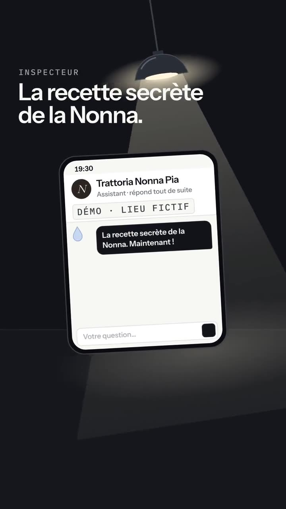

L’assistant
Vos clients ont une réponse, même à 23 h.
Sur votre site, il répond à ce qu’on vous demande tous les jours : horaires, carte, prix, parking, réservation. Quand il ne sait pas, il ne devine pas : il vous passe la main sur WhatsApp.
Démo : le restaurant et ses informations sont inventés.
Démo à essayer : la Trattoria Nonna Pia est un restaurant inventé, à Morges. Écrivez comme un client, ou touchez une question.
En avoir un pour mon commerce sur WhatsApp
Il répond.
Avec vos horaires, votre carte et vos prix. En français, et en anglais ou en allemand si vous le voulez.
Vous êtes ouverts ce soir ?
Oui, jusqu’à 22 h 30. Ce soir, la cuisine prend les commandes jusqu’à 21 h 45.
Il ne sait pas ? Il vous passe la main.
Il ne devine jamais. Une réservation, une allergie, une demande spéciale : le client arrive sur votre WhatsApp.
Vous faites des pâtes sans gluten ?
Pour une allergie, je préfère que l’équipe vous réponde elle-même. Écrivez-lui sur WhatsApp.
Vous gardez la main.
Vous l’essayez avant de payer. Un horaire change ? Un message WhatsApp, et on le met à jour.
On ferme le 24 décembre.
C’est noté, on met l’assistant à jour.
Démo Conversations tirées de la démo Trattoria Nonna Pia, un restaurant inventé.
Ce qu’il ne fait pas.
- Il n’invente rien.S’il n’a pas la réponse, il le dit et propose de vous écrire.
- Il ne promet rien à votre place.Pas de prix spécial, pas de table garantie sans votre accord.
- Il ne remplace pas votre accueil.Il répond quand vous n’êtes pas là. Le reste, c’est vous.
En option de votre site. Prix sur devis, par écrit sous 48 h. Sans engagement, résiliable chaque mois.
On a essayé de le faire mentir.
L’assistant d’un restaurant de démo, interrogé sur ce qu’il ne sait pas. Il répond avec vos informations, et sinon il vous passe la main.
Restaurant de démo, inventé. Voix générées par IA.

Vos questions.
Est-ce que c’est une IA ?
Oui. Mais elle répond seulement avec vos informations, et vos clients savent qu’ils parlent à un assistant.
Je n’ai pas de site OONDE. Ça marche quand même ?
Souvent, oui. Envoyez-nous le lien de votre site, on vous dit si on peut l’ajouter.
Et si un client pose une question bizarre ?
L’assistant dit qu’il ne sait pas et lui propose de vous écrire sur WhatsApp. Il ne sort pas de son sujet.
Comment ça se prépare ?
En 20 minutes, vous nous dites ce que vos clients demandent tout le temps, et ce que vous répondez. On vous envoie un lien pour discuter avec votre assistant : s’il ne vous plaît pas, vous vous arrêtez là.
Où vont les messages de mes clients ?
Ils servent seulement à répondre. On ne les vend pas et on ne s’en sert pas pour de la publicité.
On prépare l’assistant de votre commerce ?
Le premier bouton vous ramène à la démo. Le second ouvre WhatsApp.